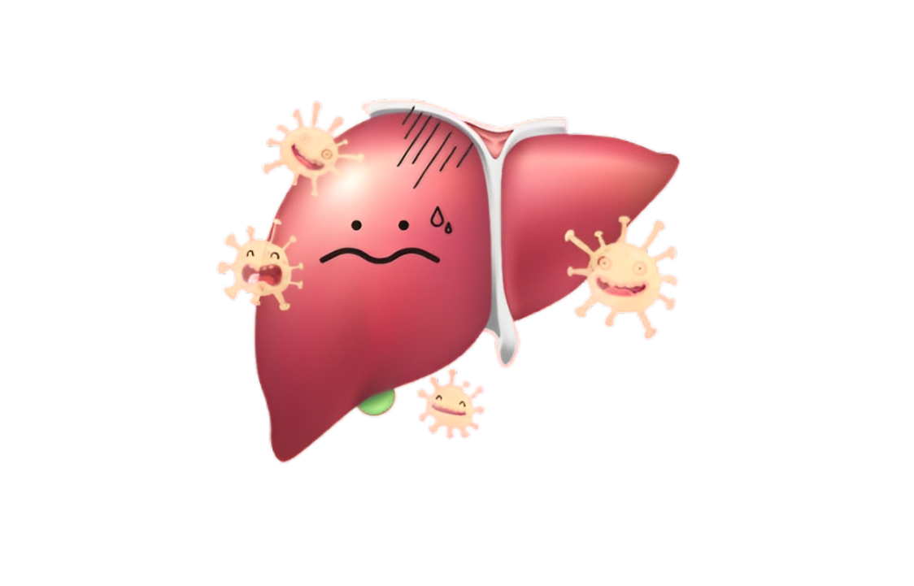
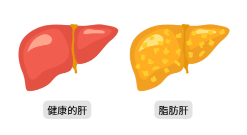
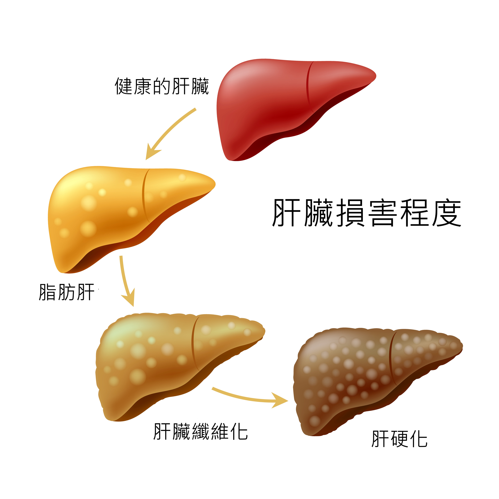

介紹
是人體的重要器官，負責多項生理功能，如代謝、解毒、儲存營養等。由於肝臟對毒素、藥物及其他物質的處理，因此肝臟容易受到各種疾病的影響。
肝炎（Hepatitis）
-
是肝臟的發炎，通常由病毒感染引起。肝炎有多種類型，包括A型、B型、C型、D型和E型肝炎，其中A型和E型肝炎主要是由食物或水源污染傳播，B型和C型肝炎則多由血液或體液傳播。
-
病因:
1.病毒感染：如A型、B型、C型、D型、E型肝炎病毒。 2.自體免疫反應：自體免疫性肝炎，免疫系統錯誤攻擊肝臟。 3.過度飲酒：長期酗酒可導致肝炎。
- 症狀：
1.疲倦、虛弱 2.黃疸（皮膚或眼睛發黃） 3.食慾不振、噁心、嘔吐 4.右上腹部疼痛或不適 5.尿色變深、大便顏色變淺- 預防：
1.疫苗接種：對於B型肝炎和A型肝炎可進行疫苗接種。 2.避免不潔飲食或水源：尤其是A型和E型肝炎。 3.避免共用針頭或接觸感染者的血液：尤其是B型和C型肝炎。 4.適量飲酒：避免過度飲酒。- 治療：
1.疫苗接種：對於B型肝炎和A型肝炎可進行疫苗接種。 2.避免不潔飲食或水源：尤其是A型和E型肝炎。 3.避免共用針頭或接觸感染者的血液：尤其是B型和C型肝炎。 4.適量飲酒：避免過度飲酒。脂肪肝（Fatty Liver Disease）
-
指肝臟內脂肪積聚，常見於肥胖、糖尿病患者。根據病因分為非酒精性脂肪肝（NAFLD）和酒精性脂肪肝。
- 病因:
1.非酒精性脂肪肝（NAFLD）：通常與肥胖、高血糖、高血脂、代謝綜合徵等相關。 2.酒精性脂肪肝：長期酗酒可導致脂肪在肝臟內積聚。
- 症狀:
1.初期通常無明顯症狀。 2.疲勞感增加。 3.右上腹部不適或輕微疼痛。 4.長期病情可引發肝硬化，進而出現黃疸、腹水等症狀。
- 預防：
1.健康飲食：減少高脂肪和高糖的食物攝取。 2.規律運動：保持正常體重，減少脂肪積聚。 3.酒：對於酒精性脂肪肝，最有效的預防方法是戒酒。 4.控制糖尿病、高血脂等相關慢性病。
- 治療：
1.減重：對於肥胖者，減少體重有助於改善脂肪肝。 2.改善飲食：高纖維、低脂肪的飲食有助於肝臟健康。 3.運動：規律運動有助於減少肝臟脂肪積聚。。 4.藥物治療：目前尚無專門藥物治療，但對於糖尿病、血脂異常的患者，控制相關病症可改善脂肪肝。
肝硬化（Cirrhosis）
-
肝臟的慢性損傷，通常由長期的肝炎、過度飲酒或脂肪肝引起。隨著肝組織的逐漸纖維化，肝臟的正常功能受損。
- 病因:
1.慢性肝炎：如B型或C型肝炎，長期的肝臟發炎可引發肝硬化。 2.長期酗酒：酗酒會引起酒精性肝病，最終導致肝硬化。 3.脂肪肝：脂肪肝若未及時治療，可能發展為肝硬化。 4.非酒精性脂肪肝病（NAFLD）。
- 症狀:
1.疲勞、食慾不振 2.右上腹部不適或疼痛 3.黃疸（皮膚和眼睛發黃） 4.腹水、浮腫 5.胸部或腹部出現血管擴張
- 預防：
1.控制B型和C型肝炎，並進行疫苗接種。 2.減少飲酒或戒酒。 3.控制肥胖、糖尿病、高血脂等風險因素。
- 治療：
1.抗病毒藥物：對於由病毒引起的肝硬化（如B型或C型肝炎），可使用抗病毒藥物。 2.肝移植：對於肝硬化晚期患者，可能需要進行肝移植手術。 3.治療並發症：如控制腹水、處理食道靜脈曲張等。
肝癌（Liver Cancer）
-
指肝臟內細胞的癌變，常見於肝硬化或慢性肝炎的患者。肝癌是一種高死亡率的癌症。
-
病因:
1.慢性肝炎：B型和C型肝炎是肝癌的主要風險因素。 2.肝硬化：大多數肝癌患者有肝硬化病史。 3.過度飲酒：長期酗酒會增加肝癌的風險。 4.非酒精性脂肪肝病（NAFLD）。
- 症狀：
1.右上腹痛或不適 2.食慾不振、體重減輕 3.黃疸（皮膚或眼睛發黃） 4.乏力 5.腹水或下肢浮腫- 預防：
1.控制肝炎病毒感染，接種B型肝炎疫苗。 2.減少酗酒，避免酒精性肝病。 3.定期檢查，特別是肝硬化患者應定期篩查肝癌。- 治療：
1.手術切除：對於早期肝癌，可能進行部分肝臟切除。 2.肝移植：對於無法手術的患者，可能進行肝移植。 3.放療或化療：對於進展期肝癌可使用放射治療或化療。 4.靶向治療或免疫療法：某些肝癌患者可以接受靶向藥物或免疫治療。 - 症狀：
- 症狀：